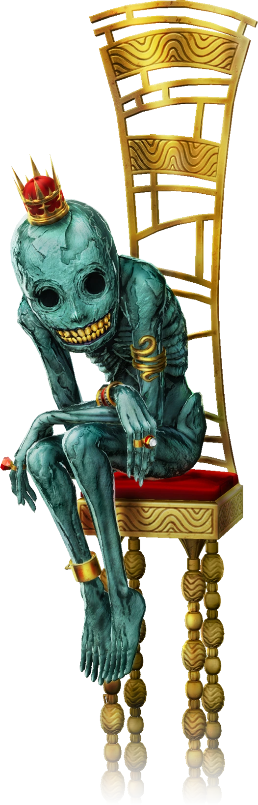

Caliphran
Summary:
Caliphran is the Vizier of insanity. He is the oldest and most dangerous of the viziers, having written his insanity into the eldritch plane not long after the dawn of the mortal world. He is known for laughter and madness, with little rhyme or reason to the havoc he wreaks upon the world. Perhaps he'll turn all the kingdom's food to ash. Perhaps he'll lift a castle high into the sky and drop it on the screaming people below. Perhaps he'll whisper a song into the ears of a beggar, giving him power and knowledge the poor man is incapable of handling. Whatever the case, the universe spins around his insane whims, and all live in fear of catching his eye.
But - well, that's not the entire story. His power doesn't just extend to the mad - it also extends to those who care for them, be they clerics, family, or doctors. These people can also gain his powers, and many claim they see him in a different light: as a poor, wretched soul, who only needs someone to care for him so that he can care for others. This isn't a common view, and expressing it publicly will earn you the distrust of the world at a minimum, but perhaps your character is someone who can see the eye of the storm.
Powers:
- Psychic powers, allowing the linking of minds and the manipulation of them.
- Dreams are his playground - and he likes to blur the dreaming and waking worlds.
- Reality warping - you can turn a wall into a swarm of butterflies if you think hard enough about it.
- For those that care for the insane, psychic soothes and empathy are common abilities.
Weaknesses:
- Stability: don't expect these powers to be reliable. Caliphran's magic has collateral damage at the best of times.
- Niran magic: the magic of the vizier of cynicism is dangerous to Caliphran, and will burn his powers at the touch. She is the only thing in the universe he is afraid of.
Followers:
- His creations are known as Kren'cal - purple-skinned humanoids with horns growing all over their bodies. They tend to be nomadic, and highly mistrusted.
- The mad and insane tend to receive his blessings.
- As do their caretakers, in a somewhat less destructive fashion.
- Sometimes, he makes a cult or corrupts a king - but only as a flight of fancy.
Misconceptions:
- People think that since he's burned by the magic of the cynic, it's enough to say "I don't believe in Caliphran" to hurt him. It isn't - not by a long shot.